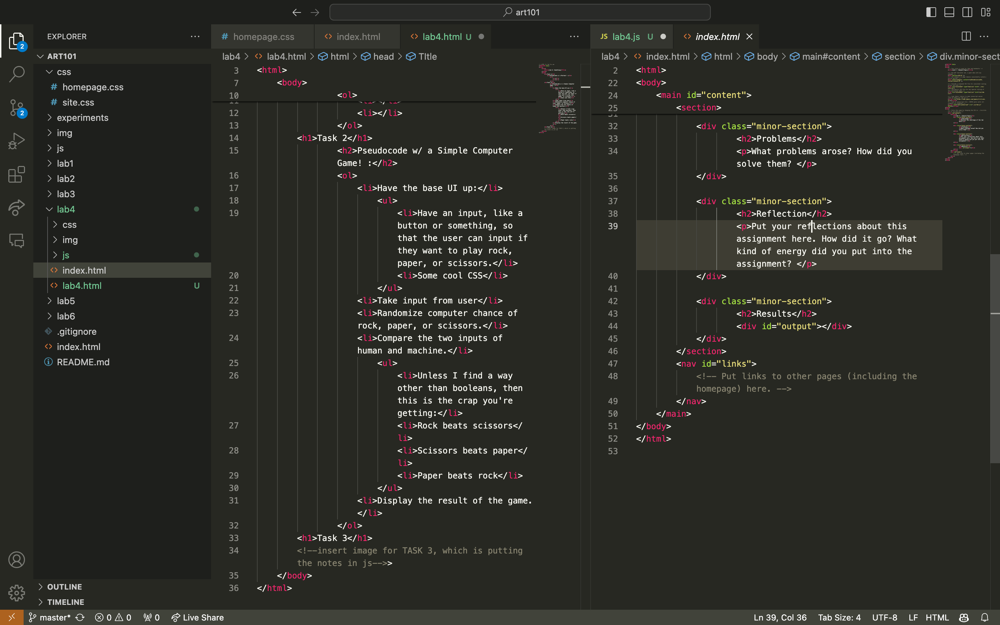

Task 1: Pseudocode an everyday task
Pseudocode w/ a Partner! :
Commuting to School
- variable student/teacher
- if driver and car is present, add driver and car
- nest driver and student/teacher in car
- drive to school
- else if bike
- bike to school
- else
- walk to school
Grocery Shopping
- enter grocery store
- obtain cart or basket
- place items wanted in cart or basket
- line up for checkout
- purchase items in cart or basket
- bag items
- exit grocery store
Task 2: Pseudocode a simple computer game
Pseudocode w/ a Simple Computer Game! :
- Have the base UI up:
- Have an input, like a button or something, so that the user can input if they want to play rock, paper, or scissors.
- Some cool CSS
- Take input from user
- Randomize computer chance of rock, paper, or scissors.
- Compare the two inputs of human and machine.
- Unless I find a way other than booleans, then this is the crap you're getting:
- Rock beats scissors
- Scissors beats paper
- Paper beats rock
- Display the result of the game.
Task 3: Turn pseudocode into comments

Task 4: Create an index.html for Lab 4
Lab 4 Indexed! AKA Lab 4 Report!